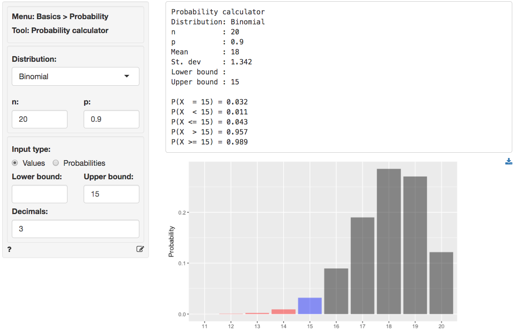
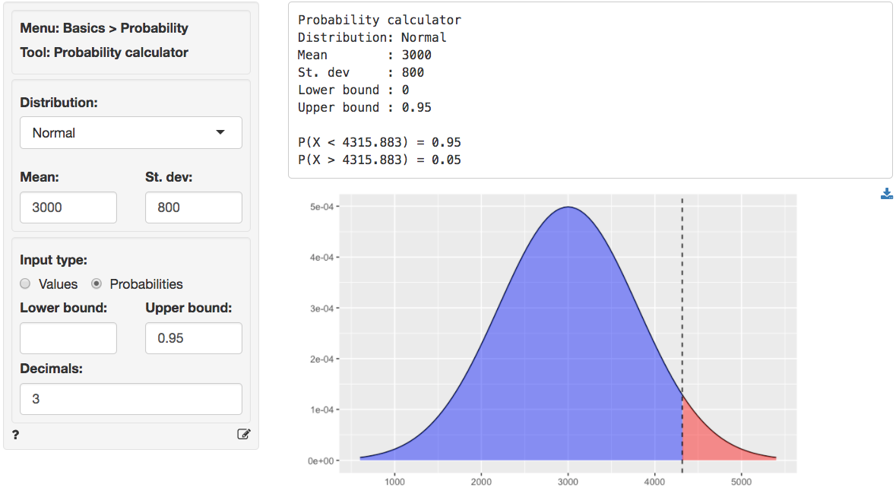
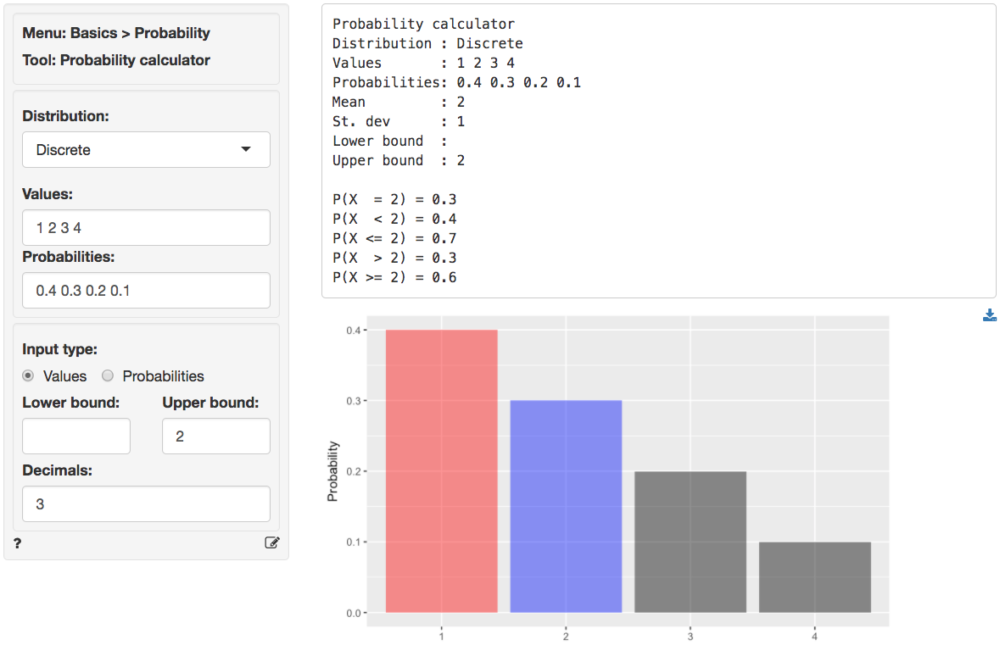

Basics > Probability > Probability calculator
Probability calculator
Calculate probabilities or values based on the Binomial, Chi-squared, Discrete, F, Exponential, Normal, Poisson, t, or Uniform distribution.
Testing batteries
Suppose Consumer Reports (CR) wants to test manufacturer claims about battery life. The manufacturer claims that more than 90% of their batteries will power a laptop for at least 12 hours of continuous use. CR sets up 20 identical laptops with the manufacturer’s batteries. If the manufacturer’s claims are accurate, what is the probability that 15 or more laptops are still running after 12 hours?
The description of the problem suggests we should select
Binomial from the Distribution dropdown. To
find the probability, select Values as the
Input type and enter 15 as the
Upper bound. In the output below we can see that the
probability is 0.989. The probability that exactly 15 laptops are still
running after 12 hours is 0.032.

Demand for headphones
A manufacturer wants to determine the appropriate inventory level for headphones required to achieve a 95% service level. Demand for the headphones obeys a normal distribution with a mean of 3000 and a standard deviation of 800.
To find the required number of headphones to hold in inventory choose
Normal from the Distribution dropdown and then
select Probability as the Input type. Enter
.95 as the Upper bound. In the output below we
see the number of units to stock is 4316.

Cups of ice cream
A discrete random variable can take on a limited (finite) number of possible values. The probability distribution of a discrete random variable lists these values and their probabilities. For example, probability distribution of the number of cups of ice cream a customer buys could be described as follows:
- 40% of customers buy 1 cup;
- 30% of customers buy 2 cups;
- 20% of customers buy 3 cups;
- 10% of customers buy 4 cups.
We can use the probability distribution of a random variable to calculate its mean (or expected value) as follows;
\[ E(C) = \mu_C = 1 \times 0.40 + 2 \times 0.30 + 3 \times 0.20 + 4 \times 0.10 = 2\,, \]
where \(\mu_C\) is the mean number of cups purchased. We can expect a randomly selected customer to buy 2 cups. The variance is calculated as follow:
\[ Var(C) = (1 - 2)^2 \times 0.4 + (2 - 2)^2 \times 0.3 + (3 - 2)^2 \times 0.2 + (4 - 2)^2 \times 0.1 = 1\,. \]
To get the mean and standard deviation of the discrete probability distribution above, as well as the probability a customer will buy 2 or more cups (0.6), specify the following in the probability calculator.

Hypothesis testing
You can also use the probability calculator to determine a
p.value or a critical value for a statistical
test. See the help files for Single mean,
Single proportion, Compare means,
Compare proportions, Cross-tabs in the
Basics menu and Linear regression (OLS) in the
Model menu for details.
Report > Rmd
Add code to
Report
> Rmd to (re)create the analysis by clicking the
icon on the bottom
left of your screen or by pressing ALT-enter on your
keyboard.
If a plot was created it can be customized using ggplot2
commands (e.g.,
plot(result) + labs(title = "Normal distribution")). See
Data
> Visualize for details.
R-functions
For an overview of related R-functions used by Radiant for probability calculations see Basics > Probability
Key functions from the stats package used in the
probability calculator:
prob_normusespnorm,qnorm, anddnormprob_lnormusesplnorm,qlnorm, anddlnormprob_tdistusespt,qt, anddtprob_fdistusespf,qf, anddfprob_chisqusespchisq,qchisq, anddchisqprob_unifusespunif,qunif, anddunifprob_binomusespbinom,qbinom, anddbinomprob_expousespexp,qexp, anddexpprob_poisusesppios,qpois, anddpois
Video Tutorials
Copy-and-paste the full command below into the RStudio console (i.e., the bottom-left window) and press return to gain access to all materials used in the probability calculator module of the Radiant Tutorial Series:
usethis::use_course("https://www.dropbox.com/sh/zw1yuiw8hvs47uc/AABPo1BncYv_i2eZfHQ7dgwCa?dl=1")
Describing the Distribution of a Discrete Random Variable (#1)
- This video shows how to summarize information about a discrete random variable using the probability calculator in Radiant
- Topics List:
- Calculate the mean and variance for a discrete random variable by hand
- Calculate the mean, variance, and select probabilities for a discrete random variable in Radiant
Describing Normal and Binomial Distributions in Radiant(#2)
- This video shows how to summarize information about Normal and Binomial distributions using the probability calculator in Radiant
- Topics List:
- Calculate probabilities of a random variable following a Normal distribution in Radiant
- Calculate probabilities of a random variable following a Binomial distribution by hand
- Calculate probabilities of a random variable following a Binomial distribution in Radiant
Describing Uniform and Binomial Distributions in Radiant(#3)
- This video shows how to summarize information about Uniform and Binomial distributions using the probability calculator in Radiant
- Topics List:
- Calculate probabilities of a random variable following a Uniform distribution in Radiant
- Calculate probabilities of a random variable following a Binomial distribution in Radiant
Providing Probability Bounds(#4)
- This video demonstrates how to provide probability bounds in Radiant
- Topics List:
- Use probabilities as input type
- Round up the cutoff value